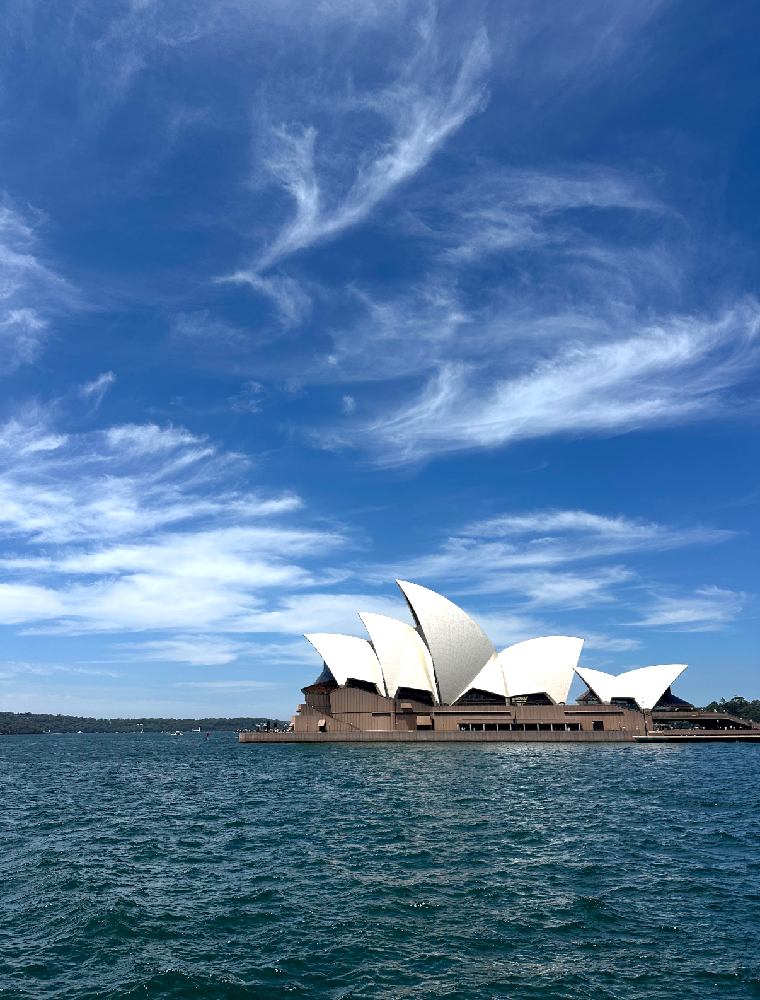
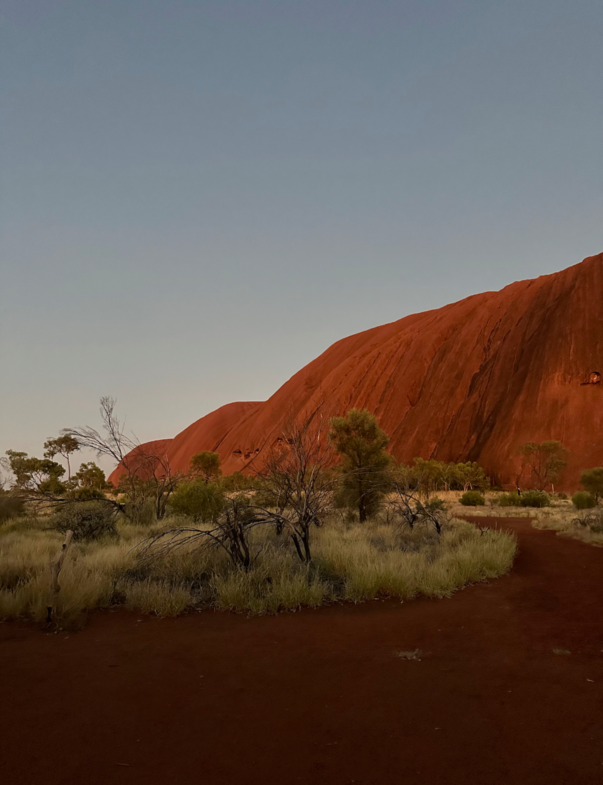
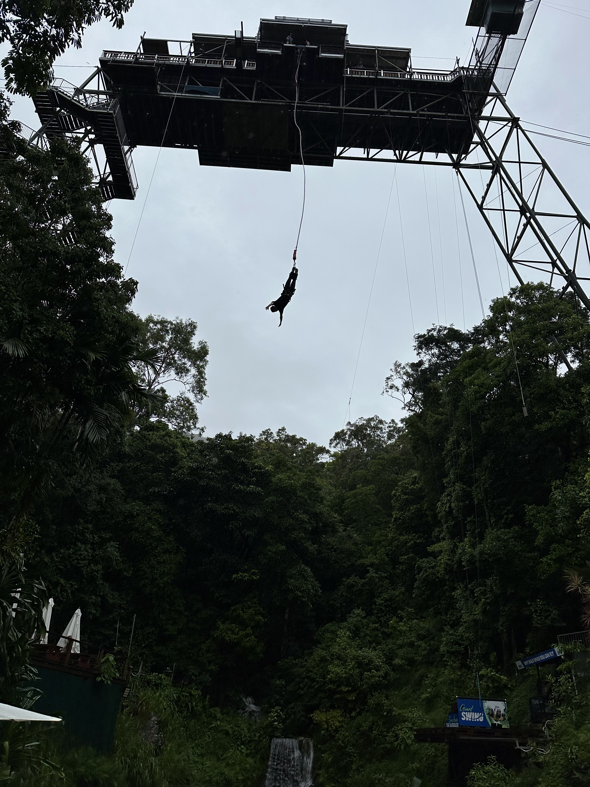
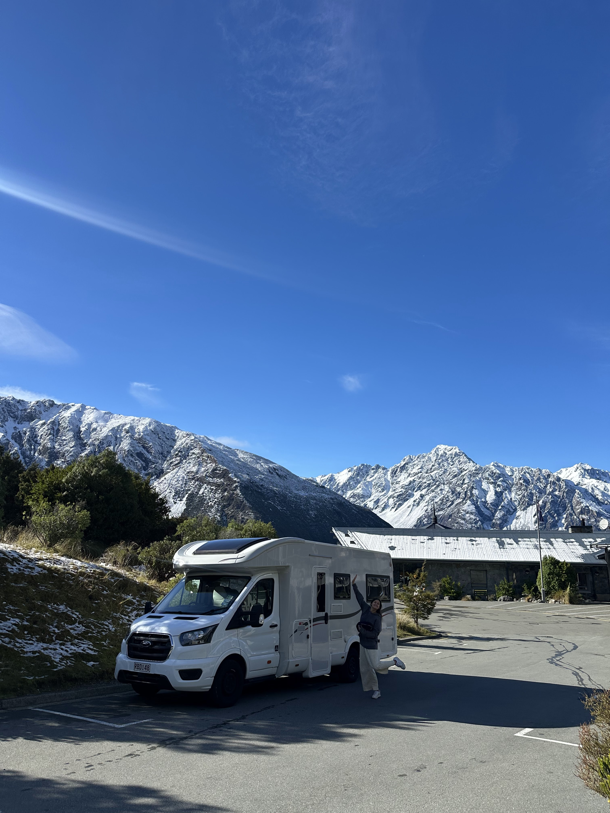
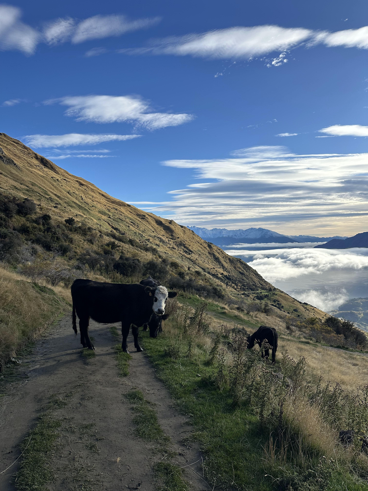
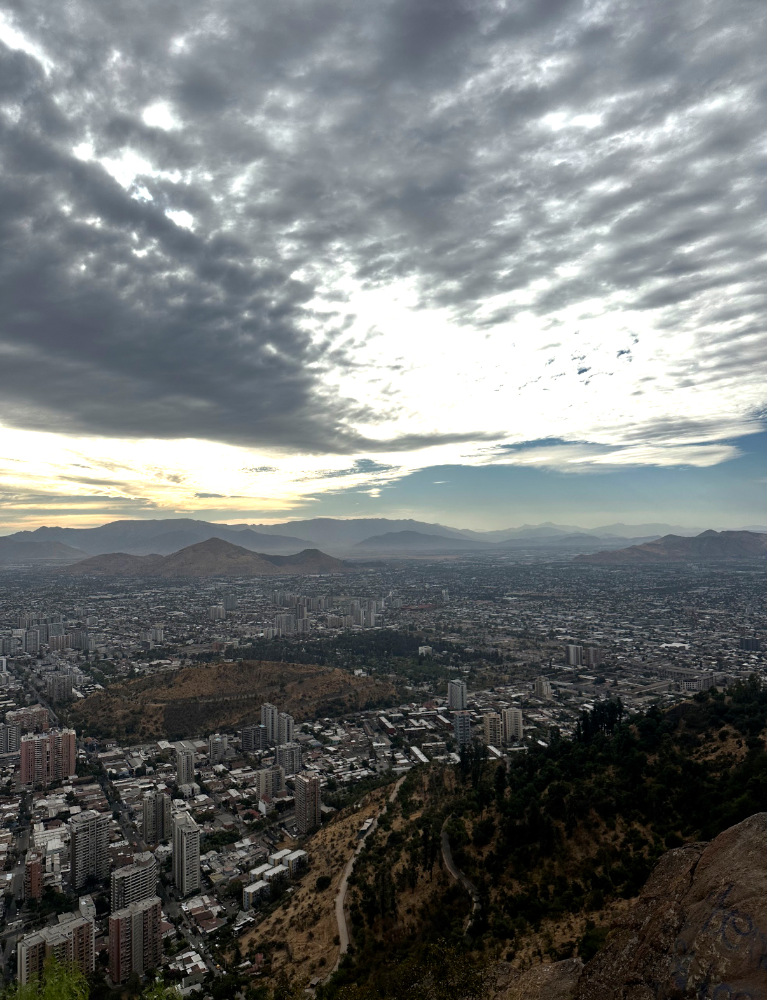
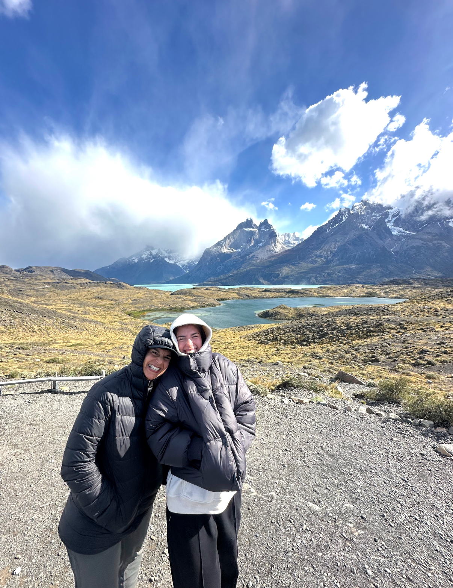
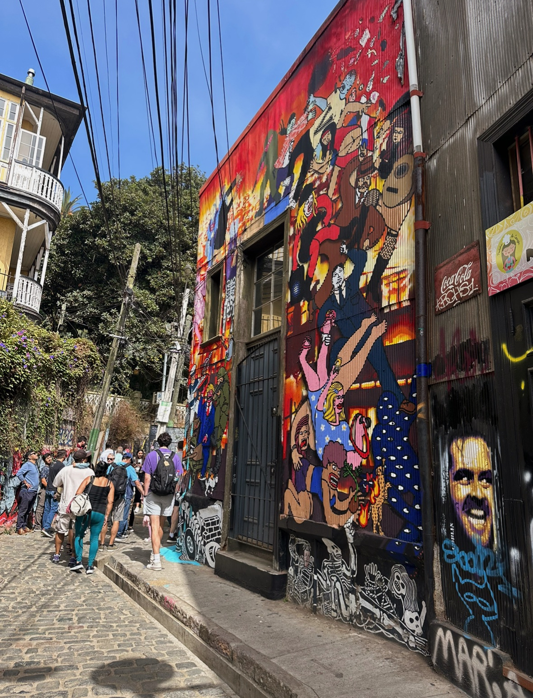

24 countries and counting, and here are a few of my most memorable:
Australia
I studied abroad in Sydney for four months, using the opportunity to explore the country from coast to coast. During my time there, I experienced Australia’s diverse landscapes firsthand—from the Great Barrier Reef to the Outback—and even bungee jumped in the rainforest. Along the way, I encountered some of the country’s most iconic wildlife, including kangaroos, koalas, and Tasmanian devils.



New Zealand
I traveled throughout New Zealand’s South Island in a camper van with five friends, taking our time to explore the region’s breathtaking mountains, lakes, and hiking trails. The natural beauty felt unmatched, and the experience was made even more memorable by the country’s laid-back culture and welcoming people—plus a few unexpected encounters with curious cows along the way.



Chile
Chile left a strong impression through its deep respect for nature and cultural expression. From the dramatic glaciers and mountains of Patagonia to the vibrant street art covering city buildings, the country balances environmental preservation with creativity. The rich culture and incredible food made the experience both visually and emotionally memorable.


